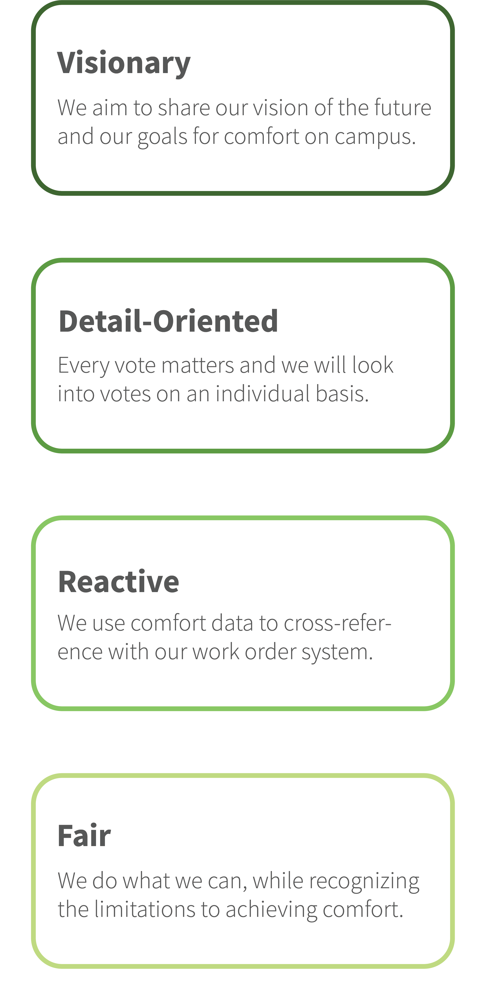
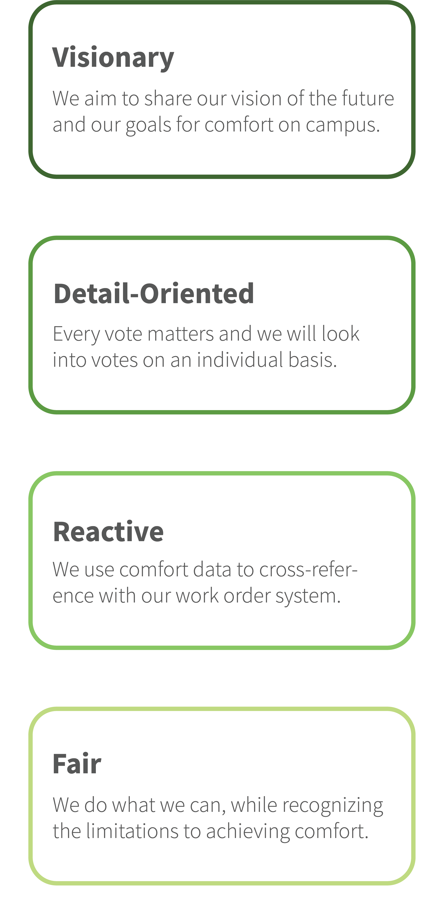

Content Strategy
Branding and engagement starts with knowing what your team values, and making this actionable to influence your communications through a Message Architecture. This process is called Content Strategy.
To develop effective branding for your PTS program, we need to make sure it supports who you are as an organization and team. We’ll start with defining your values, then your message architecture, and finally the messaging you’ll use day-to-day to promote your PTS tool.

Your Values: Using the WHY, HOW, WHAT Framework
“WHATs are products, services and job functions we perform. HOWs are values, guiding principles and actions that make us stand out. The WHY defines what the organization stands for—it is the collective purpose, cause or belief... When we align emotionally with our customers, our connection is more meaningful than any affiliation based on features and benefits.”
- From “Find Your Why” by Simon Sinek
Your WHAT describes what you do or the services you provide.
How It’s Done at UC Davis:
TherMOOstat is our project to engage the campus in thermal comfort and give them opportunities to be a part of energy conservation on campus.
Your HOW are your core values and/or guiding principles.
How It’s Done at UC Davis:
- Education: We aim to educate our users in delightful and engaging ways.
- Community: We aim to create a customer-focused community for our users to learn and engage with energy use on campus.
- Stewardship: We will use and help others use resources in a thoughtful, optimal manner.
Your WHY is your program’s collective purpose.
How It’s Done at UC Davis:
At the UCD Energy Conservation Office, we believe we can reach innovative solutions when we work together. This drives our projects to educate and engage the campus community in using our collective resources efficiently.
Your Message Architecture: How to communicate your core values
A message architecture helps to achieve consensus and clarity around communication goals.
“Bold leadership requires vision and direction: that's your message architecture... The message architecture your team establishes at the beginning of the project will help maintain consistency of vision long after the project launches.”
- From “Content Strategy at Work” by Margot Bloomstein
MOO is online print and design company. Their values are design, innovation, community and excellence. Your values and mission architecture don't always need to align, but it's always good to be clear on both. While your values are the qualities your organization prioritizes, the message architecture is more actionable and offers a strategy specific to your communications. The message architecture tells you how you should communicate with your audience.
MOO's message architecture looks like this:
- Cheeky: witty and fun, young without being childish
- Customer Oriented and Responsive: approachable, friendly, welcoming, championing and empowering
- Helpful: accessible
Exercise to Help You Develop Your Message Architecture
- Identify a person, or a few people, to read through a list of adjectives.
- For each adjective, as a group decide if this is one that describes your team or the program you want to develop. Why is a specific word important to the group?
- Once you've read through all of the adjectives and have a list of the ones that stood out to the group, start sorting through them to group and prioritize the words (keep in mind the more focused your message architecture, the easier it will be to use and follow later).
Keywords that may be common in a message architecture for a PTS program are listed below with some examples of how they relate to a PTS program.
 

Messages
Below are examples of how we use message architecture when drafting communications with PTS users. We highlight potential energy savings and comfort investigations by leaning on the keywords of our message architecture:
- "We try our best to strike a balance accross the factors affecting comfort and to please the majority in a space."
- "We read ever vote and comment and use your feedback to find comfort issues on campus."
- "The control systems and data loggers show it's at 72°F during the day, and 60°F at night when rooms are empty."
- "We can't be in every classroom, so we rely on the community to let us know if classrooms need investigating."
- "Our engineers looked int this a little bir more, and it looks like equipment is functioning as it should."
- "This classroom is part of an initiative to save energy on campus called Classroom Comfort Band."
- The Energy Conservation Office needs your input.
- Sandi uses TherMOOstat to help us find energy waste/savings in campus buildings.
- Use TherMOOstat to help Joules find energy waste/savings in campus buildings.
- A thermostat measures room temperature, but ignores how the people in the rooom are feeling. With TherMOOstat, you can tell us how you think the space feels.
- You're smarter than a thermostat.
- A thermostat measures room temperature, but doesn't tell us how you feel.
- Participate in crowdsourced comfort on campus, use TherMOOstat.
- Is your room overheated/cooled?
- We use your TherMOOstat feedback to find long-term comfort and energy trends on campus.
- You're helping us better understand HVAC systems in your building.
- We read every submission, so you are helping us to better understand how buildings are operating.
Tip from UC Davis
We have had some success recently by incorporating more about our motivation to save energy in our messaging. We found that doing so diffuses some of the dissatisfaction with thermal comfort–users respond with a willingness to tolerate less comfort if it is in the interest of saving energy.
Examples of Incorporating Energy Saving into our MSessaging
The keywords you use in your Message Architecture can also inform your taglines and calls to action in PTS marketing on your campus. For example, UC Davis chose the keyword "empowering" because it's important that our users feel like they're making a difference. This sentiment is reflected in our key tagline: You're smarter than a thermostat. With this tagline we aim to express that although we have thermostats across campus, the people in the rooms can give us comfort information we can't get anywhere else.
Message Architecture in Action
What is TherMOOstat?
Is your room too hot or cold? This can be a common problem for many on campus, and may be a sign that your building is wasting energy from an overheated or cooled space. Addressing issues of comfort and energy inefficiency go hand in hand, which is why we made TherMOOstat. Use TherMOOstat to participate in crowdsourced comfort on campus.Tell us how your space feels!
Why your feedback matters
Best suited for: Beginning of app and links to the appUse TherMOOstat now.
Tell us how your room feels.
You and your comfort
Best suited for: Promotions and social media (engaging new users)Tell us how your room feels.
Introduce TherMOOstat to a friend.
Join the others at UC Davis using TherMOOstat.
What we do with your feedback
Best suited for: End of app and blog emailsSubscribe to our newsletter for updates on our projects.
See the energy stories on the map.
Read more about campus energy on our blog.